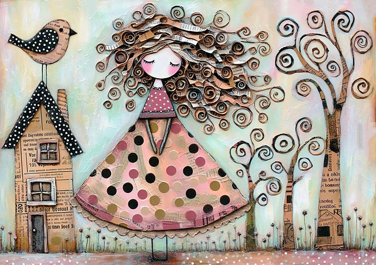

Tekijätär ja unelmien työpaja
Olipa kerran pieni maalaistyttö, joka kasvoi Joroisten kumpuilevissa maisemissa. Hänen sormensa oppivat jo varhain tuntemaan maan, puun ja työkalut – ne eivät pysyneet paikallaan, eivätkä hänen ajatuksensakaan. Hän rakasti nähdä työnsä jäljen, tuntea, miten hänen kätensä muuttivat ideat todellisuudeksi.
Kun hän kasvoi, hän matkasi kaupunkiin oppimaan. Siellä hän ahersi ja oppi, mutta hänen mielensä vaelsi aina takaisin kotikonnuille, sinne missä luovuus sai vapaasti virrata. Lopulta hän palasi, mutta ei tyhjin käsin – hän toi mukanaan taidot ja sinnikkyyden, joilla voisi rakentaa mitä vain. Hän perusti itselleen työpajan, ei seinien sisään, vaan kaikkialle, minne hänen mielikuvituksensa kantoi. Hän rakasti vaihtelua, visioita, uusia haasteita. Hän ei pelännyt, jos ei jotakin osannut – hän opetteli. Hän ei lannistunut, jos jokin ei heti onnistunut – hän yritti uudelleen. Ja niin hän rakensi, nikkaroi, suunnitteli ja toteutti.
Hän ei lukenut tarinoita, mutta hän eli ne. Jokainen työ, jokainen luotu esine tai korjattu kulma kertoi hänen tarinaansa – tarinaa, jossa kädet, sydän ja mieli loivat maailmaan jotakin uutta. Ja niin hänen työpajansa, joka ei ollut vain paikka vaan tapa elää, jatkoi kasvuaan – täynnä tekemisen iloa, sinnikkyyttä ja luovuutta, joka ei koskaan ehtynyt.
